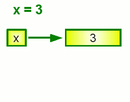
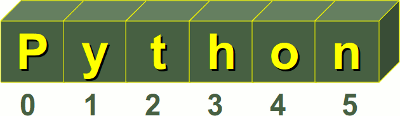
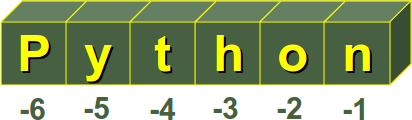
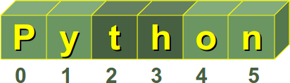

Data Types and Variables
Introduction
So, you know already a lot about data types and variables, because you have programmed lower level languages like C, C++ or other similar programming languages? In this case, it will be a good idea to continue reading this chapter on data types and variables in Python. There are integers, floating point numbers, strings, and many more, but things are not the same as in C or C++. If you want to use lists in C e.g., you will have to construe the data type list from scratch, i.e. design memory structure and the allocation management. You will have to implement the necessary search and access methods as well. Python provides power data types like lists as a genuine part of the language.Variables
As the name implies, a variable is something which can change. A variable is a way of referring
to a memory location used by a computer program.
A variable is a symbolic name for this physical location. This memory location contains values,
like numbers, text or more complicated types.
A variable can be seen as a container (or some say a pigeonhole) to store certain values.
While the program is running,
variables are accessed and sometimes changed, i.e. a new value will be assigned to the variable.
One of the main differences between Python and strongly-typed languages like C, C++ or Java
is the way it deals with types. In strongly-typed languages every variable must have a unique
data type. E.g. if a variable is of type integer, solely integers can be saved in the variable.
In Java or C, every variable has to be declared before it can be used. Declaring a variable means
binding it to a data type.
Declaration of variables is not required in Python. If there is need of a variable, you think of
a name and start using it as a variable.
Another remarkable aspect of Python: Not only the value of a variable may change during program
execution but the type as well. You can assign an integer value to a variable, use it as an integer
for a while and then assign a string to the variable.
In the following line of code, we assign the value 42 to a variable i:
i = 42The equal "=" sign in the assignment shouldn't be seen as an "equal sign". It should be "read" or interpreted as "is set to", meaning in our example "the variable i is set to 42". Now we will increase the value of this variable by 1:
>>> i = i + 1 >>> print i 43 >>>
Variables vs. Identifiers
Variables and identifiers are very often mistaken as synonyms. In simple terms: The name of a variable is an identifier, but a variable is "more than a name". A variable has a name, in most cases a type, a scope, and above all a value. Besides this, an identifier is not only used for variables. An identifier can denote various entities like variables, types, labels, subroutines or functions, packages and so on.Naming Identifiers of Variables
Every language has rules for naming identifiers. The rules in Python are the following:A valid identifier is a non-empty sequence of characters of any length with:
- the start character can be the underscore "_" or a capital or lower case letter
- the letters following the start character can be anything which is permitted as a start character plus the digits.
- Just a warning for Windows-spoilt users: Identifiers are case-sensitive
- Python keywords are not allowed as identifier names
Python Keywords
No identifier can have the same name as one of the Python keywords:and, as, assert, break, class, continue, def, del, elif, else, except, finally, for, from, global, if, import, in, is, lambda, nonlocal, not, or, pass, raise, return, try, while, with, yield
Changing Data Types and Storage Locations
As we have said above, the type of a variable can change during the execution of the script. We illustrate this in our following example:i = 42 # data type is implicitely set to integer i = 42 + 0.11 # data type is changed to float i = "fourty" # and now it will be a stringPython automatically takes care of the physical representation for the different data types, i.e. an integer values will be stored in a different memory location than a float or a string.
What's happening, when we make assignments. Let's look at the following piece of code:
>>> x = 3 >>> y = x >>> y = 2 The first assignment is unproblematic: Python chooses a memory location for x and saves the integer value 3. The second assignment is more worthwhile: Intuitively, you may assume that Python will find another location for the variable y and will copy the value of 3 in this place. But Python goes his own way, which differs from our intuition and the ways of C and C++. As both variables will have the same value after the assignment, Python lets y point to the memory location of x.
The critical question arises in the next line of code. Y will be set to the integer value 2. What will happen to the value of x? C programmers will assume, that x will be changed to 2 as well, because we said before, that y "points" to the location of x. But this is not a C-pointer. Because x and y will not share the same value anymore, y gets his or her own memory location, containing 2 and x sticks to 3, as can be seen in the animated graphics on the right side.
But what we said before can't be determined by typing in those three lines of code. But how can we prove it? The identity function id() can be used for this purpose. Every instance (object or variable) has an identity, i.e. an integer which is unique within the script or program, i.e. other objects have different identities.
So, let's have a look at our previous example and how the identities will change:
>>> x = 3 >>> print id(x) 157379912 >>> y = x >>> print id(y) 157379912 >>> y = 2 >>> print id(y) 157379924 >>> print id(x) 157379912 >>>
Numbers
Python's built-in core data types are in some cases also called object tpyes. There are four built-in data types for numbers:
- Integer
- Normal integers
e.g. 4321 - Octal literals (base 8)
A number prefixed by a 0 (zero) will be interpreted as an octal number
example:
>>> a = 010Alternatively, an octal number can be defined with "0o" as a prefix:
>>> print a
8>>> a = o10
>>> print a
8 - Hexadecimal literals (base 16)
Hexadecimal literals have to be prefixed either by "0x" or "0X".
example:
>>> hex_number = 0xA0F
>>> print hex_number
2575
- Normal integers
these numbers are of unlimeted size
e.g.42000000000000000000L
for example: 42.11, 3.1415e-10
Complex numbers are written as
<real part> + <imaginary part>j
examples:
>>> x = 3 + 4j
>>> y = 2 - 3j
>>> z = x + y
>>> print z
(5+1j)
Strings
Another important data type besides numbers are strings.
Strings are marked by quotes:
- single quotes (')
'This is a string with single quotes' - double quotes (")
"Obama's dog is called Bo"" - triple quotes, both single (''') and (""")
'''String in triple quotes can extend
over multiple lines, like this one, and can contain
'single' and "double" quotes.'''

It's possible to start counting the indices from the right. In this case negative numbers are used, starting with -1 for the most right character.

Some operators and functions for strings:
- Concatenation
Strings can be glued together (concatenated) with the + operator:
"Hello" + "World" -> "HelloWorld" - Repetition
String can be repeated or repeatedly concatenated with the asterisk operator "*":
"*-*" * 3 -> "*-**-**-*" - Indexing
"Python"[0] -> "P" - Slicing
Substrings can be created with the slice or slicing notation, i.e. two indices in square brackets separated by a colon:
"Python"[2:4] -> "th"

- Size
len("Python") -> 6
Immutable Strings
Like strings in Java and unlike C or C++, Python strings cannot be changed. Trying to change an indexed position will raise an error:>>> s = "Some things are immutable!" >>> s[-1] = "." Traceback (most recent call last): File "<stdin>", line 1, in <module> TypeError: 'str' object does not support item assignment >>>
A String Pecularity
Strings show a special effect, which we will illustrate in the following example. We will need the "is"-Operator. If both a and b are strings, "a is b" checks if they have the same identity, i.e. share the same memory location. If "a is b" is True, then is trivially follows that "a == b" has to be True as well. But "a == b" True doesn't imply that "a is b" is True as well!Let's have a look at how strings are stored in Python:
>>> a = "Linux" >>> b = "Linux" >>> a is b TrueOkay, but what happens, if the strings are longer? We use the longest village name in the world in the following example. It's a small village with about 3000 inhabitants in the South of the island of Anglesey in the Nort-West of Wales:
>>> a = "Llanfairpwllgwyngyllgogerychwyrndrobwllllantysiliogogogoch" >>> b = "Llanfairpwllgwyngyllgogerychwyrndrobwllllantysiliogogogoch" >>> a is b TrueNothing has changed to our first "Linux" example. But what works for Wales doesn't work e.g. for Baden-Württemberg in Germany:
>>> a = "Baden-Württemberg" >>> b = "Baden-Württemberg" >>> a is b False >>> a == b TrueYou are right, it has nothing to do with geographical places. The special character, i.e. the hyphen, is to "blame".
>>> a = "Baden!" >>> b = "Baden!" >>> a is b False >>> a = "Baden1" >>> b = "Baden1" >>> a is b True
Escape Sequences
The backslash (\) character is used to escape characters, i.e. to "escape" the special meaning, which this character would otherwise have. Examples for such characters are newline, backslash itself, or the quote character. String literals may optionally be prefixed with a letter 'r' or 'R'; these strings are called raw strings. Raw strings use different rules for interpreting backslash escape sequences.| Escape Sequence | Meaning Notes |
|---|---|
| \newline | Ignored |
| \\ | Backslash (\) |
| \' | Single quote (') |
| \" | Double quote (") |
| \a | ASCII Bell (BEL) |
| \b | ASCII Backspace (BS) |
| \f | ASCII Formfeed (FF) |
| \n | ASCII Linefeed (LF) |
| \N{name} | Character named name in the Unicode database (Unicode only) |
| \r | ASCII Carriage Return (CR) |
| \t | ASCII Horizontal Tab (TAB) |
| \uxxxx | Character with 16-bit hex value xxxx (Unicode only) |
| \Uxxxxxxxx | Character with 32-bit hex value xxxxxxxx (Unicode only) |
| \v | ASCII Vertical Tab (VT) |
| \ooo | Character with octal value ooo |
| \xhh | Character with hex value hh |